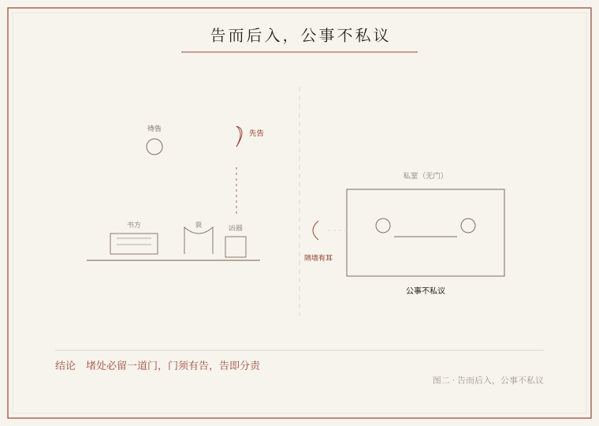

曲礼下 · 二·二十 · 第 143 课
书方、衰、凶器，非一概不得入；须先告君，告而后入。末句一转：「公事不私议。」
说什么事：书方、衰、凶器，不以告，不入公门。公事不私议。
落在哪一层：礼。前两节是禁，此节是禁中之通，末句则另起一义。
为何编在此位：二·十八禁物，二·十九禁服，此节给出「例外」与收束之语。曲礼下前段至此为一结。
【经】書方、衰、凶器，不以告，不入公門。公事不私議。
【注】此謂喪在內，不得不入，當先告君耳。方，板也。《士喪禮》下篇曰：「書賵於方，若九、若七、若五。」凶器，明器也。嫌若姦也。
【疏】方，板也。百字以上用方板书之，故云「书方」也。「衰」者，孝子丧服也。「凶器」者，棺材及棺中服器也。……「不以告，不入公门」者，臣在公宫而死，营凶器所须，而不得辄将入公门，故须告也。
书方 注「方，板也」。疏「百字以上用方板书之」。送死之物，条录于板。
衰 疏「孝子丧服也」。丧服之统名。
凶器 注「明器也」。疏兼「棺材及棺中服器」。
不以告 告者，告君。不告而携入，则罪。
公事不私议 注「嫌若奸也」。公事当公议，私室论之则近于奸。
丧在内 注四字。丧在公宫之内，故不得不入——此为例外之所由。
书方、丧服、凶器，若不先行禀告，就不带进公门。公事不在私处议论。
前两节立禁，此节立「告而后入」的通路。礼不是一味堵，堵处必留一道门；但门须有告，告即责任。末句「公事不私议」，则是把「公开」这件事从物与服，推到言语。
第一层 告是责任的转移 不告而人自担，告则君与其责。礼的「告」，从来不是形式，是分责。
第二层 丧在内则不得不入 注点明此例专为「丧在公宫」而设。若无此情，告亦不得入。
第三层 书方之细 送死之物条录于板，九行、七行、五行，物多则行多。连记账的行数都有定式。
第四层 公事不私议 此句与前三句不同类，是收束语。前三句管物与服，此句管言；前三句管门，此句管室。合看则见：公门之礼，其内核是「公」与「私」的分界。
与今日何干 例外须报备，报备即担责；公事在私群里议，古人谓之「嫌若奸」。两条今日仍在用，只是不再有人说是礼。
| 左 | 右 |
|---|---|
| 书方 | 板也，条录送死之物 |
| 衰 | 孝子丧服 |
| 凶器 | 明器，棺及棺中服器 |
| 不以告，不入公门 | 告则分责 |
| 此谓丧在内 | 例外有专指 |
| 公事不私议 | 嫌若奸，防嫌疑 |
画左右两格：左格一道门限，门外并排三物（一块写着横线的木板、一件丧服、一只小口大腹的明器），三物上方各画一枚向上翘起的小钩（示意待告），钩尖连向门内一枚小小的符节；右格画一间闭着的私室（四壁合围、无门），室内两人对坐、中间一道横案，案上无物，室外画一只耳朵状的弧线贴壁（示意隔墙有耳）。两格之间一道细竖线。不写文字。赭色只用在左格那枚符节与右格那道弧线上。
